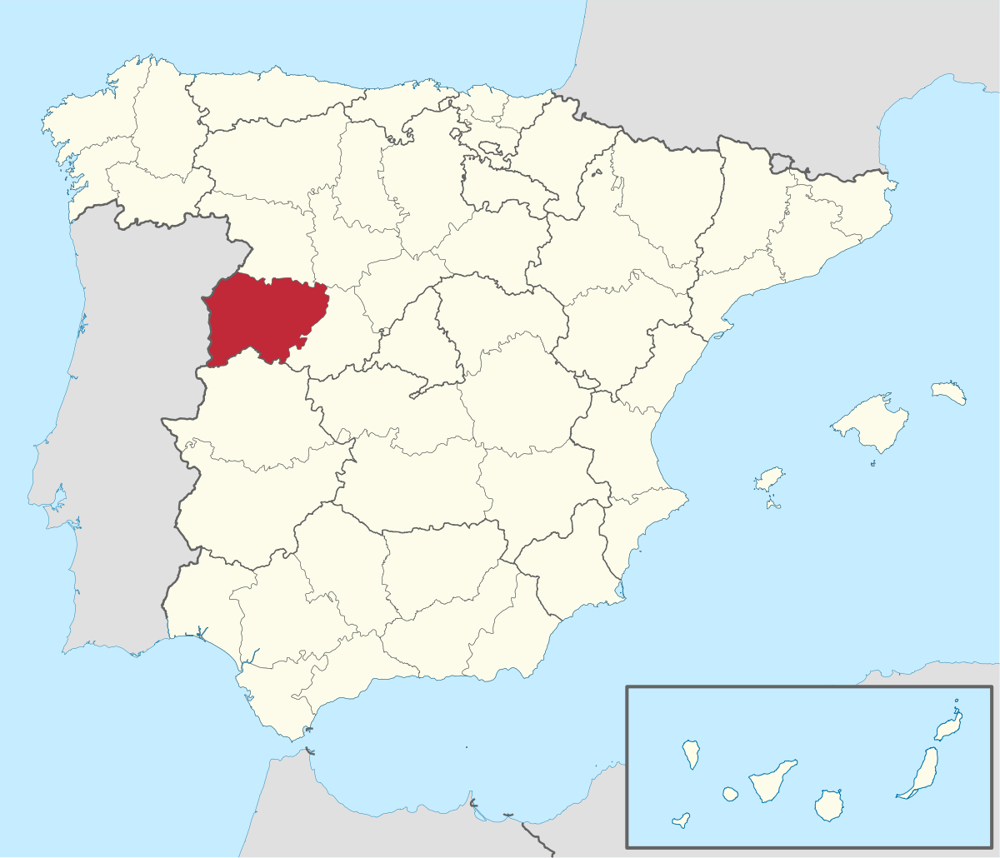
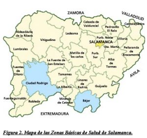
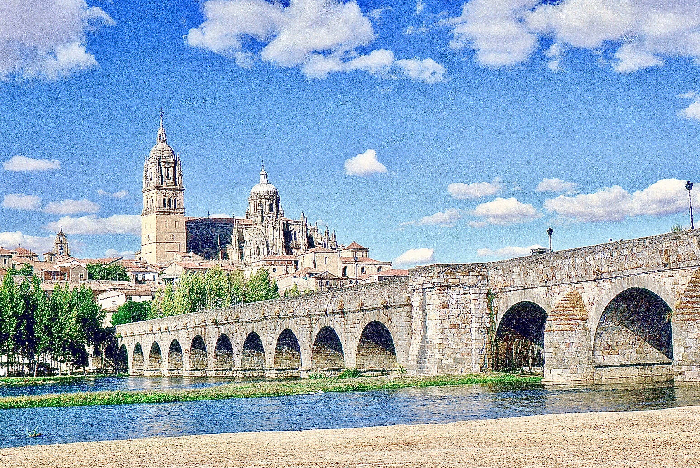
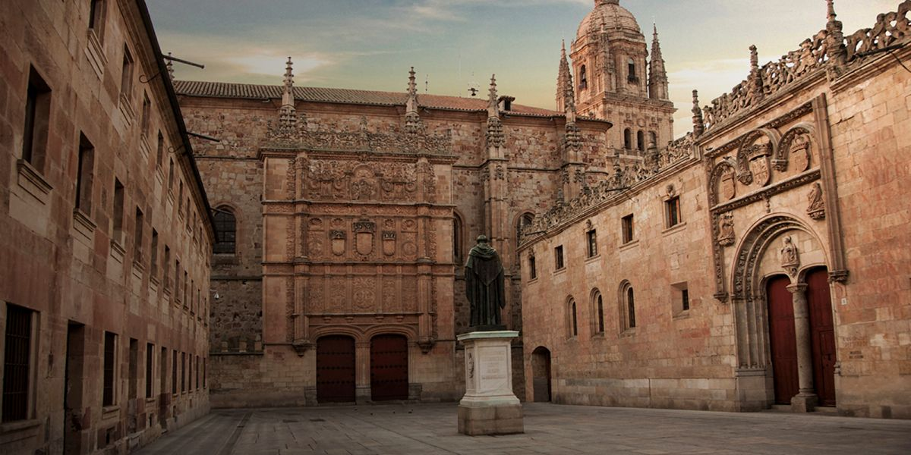
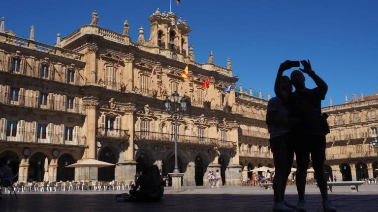
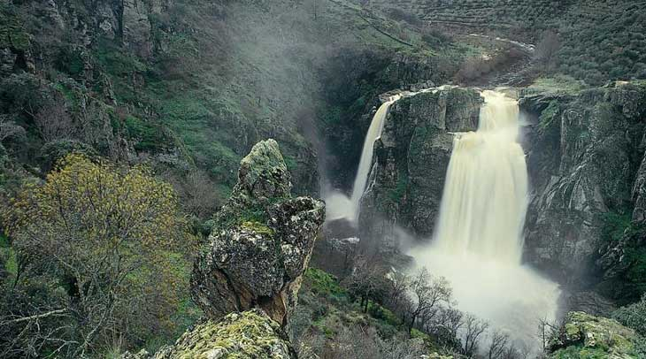
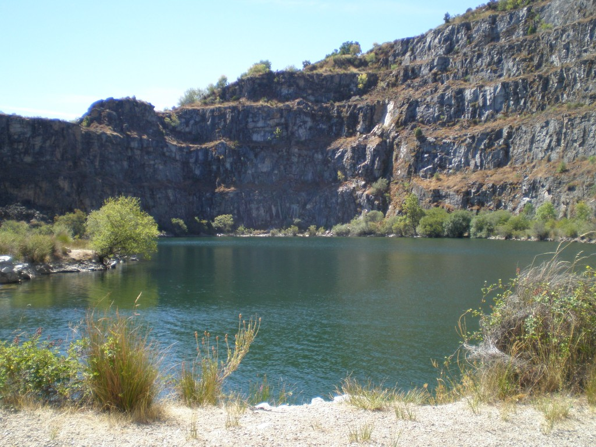

Informacion
Localización
Localidades principales
Geografía de la provincia
Historia
Cultura
Naturaleza
Tradiciones
Otros aspectos de interés
Salamanca
_______________________________________________________________________________________________________________________________________________________________
Localización
Salamanca es un municipio y ciudad española, capital de la provincia homónima, perteneciente a la Región Leonesa y situada en la comunidad autónoma de
Castilla y León. Está ubicada en la comarca del Campo de Salamanca, en plena meseta Norte, en el cuadrante noroeste de la península ibérica. Tiene una
población de 144 436 habitantes empadronados (INE, 2017). Su área funcional estable alcanza los 203 999 ciudadanos, lo que la convierte en la tercera más
poblada de la comunidad, tras la de Valladolid y la de León.

_______________________________________________________________________________________________________________________________________________________________
Localidades principales
Localización Province Salamanca : País España, Comunidad Autónoma Castilla y León.
Grandes ciudades : Salamanca, Santa Marta de Tormes, Béjar, Ciudad Rodrigo, Villamayor, Carbajosa de la Sagrada, Villares de la Reina, Peñaranda de
Bracamonte, Guijuelo, Alba de Tormes, Cabrerizos, Terradillos, Castellanos de Moriscos, Vitigudino, Doñinos de Salamanca, Aldeatejada, Ledesma, Lumbrales,
Villoria, Monterrubio de Armuña, La Fuente de San Esteban, Aldeadávila de la Ribera, Carrascal de Barregas, Pelabravo, Calvarrasa de Abajo, Fuentes de Oñoro,
La Alberca, San Cristóbal de la Cuesta, Macotera, Cantalapiedra, Linares de Riofrío, Babilafuente, Candelario, Cantalpino, Sancti-Spíritus, Villarino de los
Aires, Tamames, Villavieja de Yeltes, Villoruela y Calzada de Valdunciel.

_______________________________________________________________________________________________________________________________________________________________
Geografía de la provincia
La ciudad está situada a una altitud de 798 m s. n. m..5 La altitud del municipio varía desde los 763 metros en el último tramo en el municipio del río Tormes hasta los 911 metros en Los Montalvos, en el suroeste del municipio.6
Clima
De acuerdo con los datos de la tabla a continuación y a los criterios de la clasificación climática de Köppen modificada40 el aeropuerto de Salamanca (que se encuentra próximo a la ciudad en el municipio de Calvarrasa de abajo) presenta un clima semiárido de tipo BSk («estepa fría») cerca del límite de transición a climas mediterráneos de tipo Csa y Csb.Ver video desde youtube - Video realizado por El Viajero Feliz
_______________________________________________________________________________________________________________________________________________________________
Historia
Edad Antigua
El primer hábitat humano en el solar salmantino se ha fechado a comienzos del primer milenio antes de Cristo. Así lo atestiguan los restos cerámicos hallados en el «cerro de San Vicente» y que han sido adscritos a la cultura de Cogotas I del Bronce Final. En este mismo cerro se ha hallado lo que hasta la fecha se considera el primer asentamiento humano de carácter estable y continuo, aunque ya adscrito a la cultura del Soto de Medinilla de la primera Edad del Hierro (siglo vii a. C.). Con posterioridad, ya en la segunda Edad del Hierro (desde el siglo iv a. C.), se ha constatado que se desarrolló un nuevo núcleo de población en el denominado «teso de las catedrales o cerro de San Isidro», este ya de carácter castreño y que perduró hasta la definitiva romanización de la ciudad. Todos estos asentamientos, y por tanto el actual emplazamiento de Salamanca, deben su existencia a las especiales características geomorfológicas del terreno sobre el que se asentaron. Así pues, en la elección de la ubicación de estos sucesivos asentamientos debió tener una especial influencia que esta zona contara con tres tesos —formados por la erosión de los arroyos de San Francisco y Santo Domingo—, sus correspondientes vaguadas y especialmente la proximidad del río Tormes. Estos detalles remiten a la idoneidad de este territorio a las primitivas funciones de defensa y de control del territorio circundante.47 El asentamiento del cerro de San Isidro debió ser una ciudad de gran entidad entre los siglo iv y II a. C., no solo por sus dimensiones, si no que también por sus óptimas condiciones orográficas y de protección defensiva, ya que contó con muralla y foso. En el 220 a. C., Aníbal, en su avance por Iberia, sitió y conquistó la antigua ciudad de Helmántica (Salamanca). Así, Plutarco dice que «Anibal la sitió y sus moradores, por evitar mayores daños, se le sometieron ofreciéndoles trescientos talentos de plata y otros tantos rehenes, alzando el sitio, los Helmantiqueses, faltaron a sus promesas y protegidos por sus mujeres que habían escondido las armas y lograron vencer a las tropas de Anibal». Sin embargo, el general cartaginés terminó apresándolos y, según Polibio, «admirado por la valentía de sus mujeres, por ellas devolvió a sus hombres la patria y la riqueza».4847 Tras la II Guerra Púnica, el victorioso ejército romano comenzó su expansión por buena parte de la península ibérica. Salamanca inició una intensa época de romanización como ciudad anexionada a la provincia de Lusitania. La Salmantica romana fue reestructurada, limitando su asentamiento al denominado teso de las catedrales, abandonando el emplazamiento del cerro de San Vicente. Su nueva configuración la mantuvo como una ciudad notable, no solo por sus particulares características defensivas y de accesibilidad, si no que también por ser un centro de intercambio.Edad Media
Con el fin del Imperio Romano Occidental, los alanos se establecen en Lusitania y la ciudad pasa a formar parte de esta región. Posteriormente los visigodos conquistan la ciudad y la anexionan a su territorio. Se tienen pocos datos sobre el desarrollo de Salamanca en la época visigoda, solamente se sabe que en el siglo iv la muralla romana se amplía con torreones sobre el mismo trazado, y que la fábrica de la cerca anterior quedó destruida prácticamente en su totalidad. Se sabe que en 589 la ciudad era sede episcopal pues figura entre las ciudades que enviaban obispos a los concilios de Toledo. En el año 712, con la invasión musulmana de la península ibérica, Musa ibn Nusair conquista la ciudad. Durante la Alta Edad Media, la zona quedó como «tierra de nadie» y gran parte de sus núcleos de población resultaron destruidos por las frecuentes incursiones (algaradas) de los árabes. Salamanca quedó reducida aun núcleo carente de importancia y casi despoblado, aunque se mantuvo intacto el puente, con algunos pobladores en los alrededores. Los sucesivos intentos de los reinos cristianos de estabilizar la zona originaron no pocos choques con las expediciones musulmanas hacia el norte, que provocaron diversas escaramuzas y batallas, como la de Alfonso I de Asturias en 754, que acabaron por arrasar lo que quedaba de urbano. La zona permaneció más o menos despoblada hasta que tras la importante victoria cristiana, en la batalla de Simancas del año 939, se inicia la repoblación efectiva de la zona ribereña del Tormes. Según la redacción pelagiana de la Crónica de Sampiro, dos meses después de terminado el ataque islámico, Ramiro II de León dispuso el avance de su ejército hacia las riberas del Tormes, donde dice que comienza la repoblación: Civitates desertas ibidem populavit; hee sunt: Salamantica, sedes antiqua castrorum, Letesma, Ribas, Balneos, Alphandiga, Penna et alia plurima castella, quod longum est prenotare. Ciudades desiertas recobran población; estas son: Salamanca [...] y muchos otros pueblos, observamos que llevará demasiado tiempo. Tras la conquista de Toledo por Alfonso VI de León en el año 1085, se produjo la repoblación definitiva de la ciudad. En 1102, Raimundo de Borgoña se dirige a la ciudad con un nutrido grupo de pobladores de diversos orígenes, con una composición similar a los nuevos habitantes de la ciudad de Ávila52 —francos, castellanos, serranos, mozárabes, toreses, portogaleses y bragancianos, así como con la colaboración puntual de gallegos, judíos y musulmanes; que quedan recogidos en el Fuero de Salamanca,5354555652— por orden de su suegro Alfonso VI. Estos fundaron sus respectivas iglesias y parroquias.5758596061 De todos los grupos repobladores el más importante era el de los serranos, también llamados los guerreros-pastores, dedicados exclusivamente al cuidado de sus ganados y a la guerra. No hay que olvidar que toda la Extremadura medieval, territorio comprendido entre el Duero y el Sistema Central, era conocido en las crónicas árabes como «País de los serranos».57 Todavía hoy existe una calle «Serranos» en torno a la cual se aglutinaba este colectivo repoblador. Los nuevos pobladores ocuparon el antiguo recinto amurallado y colonizaron nuevos terrenos de su entorno. La ocupación de la ciudad respondió a criterios sociales, étnicos y de poder. De esta forma, la élite social se ubicó en el centro de la ciudad, espacio que venía a coincidir con el de la antigua ciudad celtibérica. Los serranos, vinculados al poder político y militar, ocuparon la parte oeste (casa del representante real y Alcázar) y los francos la este, junto con la sede episcopal y el centro comercial en torno al Azogue Viejo. Los judíos se situarán junto al alcázar y los restantes grupos de repobladores (castellanos, portugueses, judíos, mozárabes, toresanos y gallegos, entre otros) serán ubicados en los espacios extramuros.Como el resto de núcleos históricos de la Corona que tenían representación en Cortes, Salamanca se unió al movimiento de las Comunidades de Castilla (1520) contra los nuevos impuestos que reclamaba Carlos I en las Cortes y en defensa de sus manufacturas textiles contra los privilegios de los exportadores de lana. Tras la derrota de los Comuneros el rey Carlos I hizo desmochar las torres de los palacios de los salmantinos que se adhirieron a la revuelta. El siglo xvi fue la época de mayor esplendor de la ciudad, tanto en la demografía como en la vida universitaria, gracias al prestigio de sus profesores, con la llamada Escuela de Salamanca (se calcula que Salamanca tenía unos 24 000 habitantes y hacia 1580 se matriculaban cada año 6500 estudiantes).62 Después se unió a la decadencia generalizada de las ciudades de la Corona de Castilla en la meseta norte (12 000 habitantes en 1651). Además, fue alrededor de entonces cuando se construyó la Iglesia de San Isidoro. El barrio judío de Salamanca estaba situado al norte, junto a la muralla (más o menos la actual avenida de Mirat). Cuando, en 1492, fueron expulsados, el barrio fue tapiado y respetado por los salmantinos, probablemente pensando en un posible retorno, y al quedar deshabitado se llenó de conejos, por lo que ha sido conocido hasta hace poco como barrio del Conejal. En el siglo xviii tuvo un importante renacimiento económico y cultural, que propició la terminación de la catedral Nueva (cuyas obras habían estado paradas durante casi un siglo), la construcción de su imponente plaza mayor barroca en 1729 y permitió rehacer muchos de los edificios monumentales dañados por el terremoto de Lisboa de 1755. En el aspecto cultural, también se notó el influjo de la Ilustración de los Borbones en la Universidad en el último tercio del siglo.

Edad Contemporanea
Durante la guerra de la Independencia, Salamanca fue ocupada por las tropas del mariscal Soult en 1809 y permaneció en manos francesas hasta la batalla de los Arapiles (1812), en la que vencieron los ejércitos aliados bajo el mando de Wellington. Durante la ocupación, los franceses construyeron defensas y, para obtener materiales, destruyeron una importante parte de los edificios salmantinos, especialmente del barrio llamado de Caídos (derruidos), donde se levantaban conocidos colegios mayores de la Universidad, de los que no queda ni rastro. El peor momento llegó cuando Fernando VII cerró las universidades españolas. A partir de la reapertura, la de Salamanca quedó reducida a una universidad de provincias. Por la provincia de Salamanca actuó el guerrillero y militar salmantino Julián Sánchez "el Charro" al mando de la unidad Lanceros de Castilla. En 1833 se crea la provincia de Salamanca, encuadrada en la Región Leonesa,63 convirtiéndose de este modo la ciudad de Salamanca en la capital de dicha provincia, pasando a albergar la Diputación de Salamanca. En 1873, tras proclamarse la Primera República, se acometió el primer intento serio de federalización de España mediante el proyecto de Constitución de 1873. Apenas cinco días después de la presentación de este proyecto, Salamanca sufrió un levantamiento cantonalista que, tras cuatro días de éxito, fue sofocado el 26 de julio de 1873. Posteriormente, un pronunciamiento militar se llevó por delante la I República y de paso la iniciativa regionalizadora del Estado Federal. Durante el resto del siglo xix la ciudad experimentó una leve recuperación al ser nombrada capital de provincia y al haberse construido el ferrocarril que unía Francia con Portugal, y que pasaba por la Meseta (Medina del Campo y Salamanca, 1877). La sublevación del ejército contra la Segunda República triunfó en Salamanca desde el primer momento, siendo detenido y fusilado el alcalde de Salamanca Casto Prieto Carrasco por las tropas franquistas.64 Durante la Guerra Civil, entre octubre de 1936 y noviembre de 1937, el Palacio Episcopal fue residencia y centro de mando del general Franco. La ciudad fue también sede de las organizaciones falangistas y de algunos Ministerios. Tras la guerra se concentraron en Salamanca los documentos incautados por el Ejército sublevado a medida que iban ocupando el territorio que había defendido a la República, con lo que se creó un gran archivo documental sobre la guerra civil española (Archivo General de la Guerra Civil Española). La parte de este archivo "perteneciente a Cataluña" amén de muchísimos papeles y documentos valiosos de particulares e instituciones no pertenecientes a esa región fue trasladado a Barcelona en la primavera de 2006, tras grandes disputas entre el ayuntamiento salmantino y el gobierno español, y manifestaciones populares. El Ayuntamiento de Salamanca, presidido por Julián Lanzarote (PP), cambió el nombre de la calle en la que se encuentra el archivo, de «Gibraltar» (nombre que homenajeaba a las milicias salmantinas que fueron con Alfonso XI a la conquista de Gibraltar) a de «El Expolio», como señal de protesta tras el traslado de los «papeles de Salamanca» a Cataluña. En 1940, Pío XII fundó la Universidad Pontificia de Salamanca como continuación de los antiguos estudios de teología. En 1988 Salamanca fue declarada Ciudad Patrimonio de la Humanidad por la Unesco. En 1998, por acuerdo de los ministros de Cultura de la Unión Europea, Salamanca fue designada junto a Brujas, Capital Europea de la Cultura para el año 2002. La ciudad también aspira a obtener la candidatura a la Exposición Universal de Salamanca en un futuro no muy lejano. Actualmente la población de la capital salmantina, estancada desde hace unas tres décadas, ronda los 160 000 habitantes, aunque en 2006 descendió en más de 11 000 personas con respecto al año 1994. Esto se debe fundamentalmente al traslado de parte de su población al área metropolitana, fenómeno común a muchas otras ciudades españolas, aunque también hay un elevado índice de emigración a lugares como Madrid. Es significativo comprobar que la provincia de Salamanca tiene un alto índice de población envejecida respecto a los datos nacionales. Por su parte, el sector servicios (el boyante turismo cultural y la Universidad) es la principal fuente de ingresos de la ciudad. Es especialmente relevante la actividad educativa durante el verano, ya que cuenta con una gran afluencia de estudiantes procedentes de muchos países, que en su mayoría vienen para aprender el castellano y asistir a diversos cursos de verano. La capital salmantina acogió los días 14 y 15 de octubre de 2005 la celebración de la XV Cumbre Iberoamericana de Jefes de Estado y de Gobierno. El príncipe heredero del Japón Naruhito visitó la ciudad el 13 de junio de 2013 con motivo de la conmemoración de los 400 años de intercambio hispano-japonés. Recibió de manos del alcalde Alfonso Fernández Mañueco las llaves de la ciudad.Edad Moderna
Como el resto de núcleos históricos de la Corona que tenían representación en Cortes, Salamanca se unió al movimiento de las Comunidades de Castilla (1520) contra los nuevos impuestos que reclamaba Carlos I en las Cortes y en defensa de sus manufacturas textiles contra los privilegios de los exportadores de lana. Tras la derrota de los Comuneros el rey Carlos I hizo desmochar las torres de los palacios de los salmantinos que se adhirieron a la revuelta.El siglo xvi fue la época de mayor esplendor de la ciudad, tanto en la demografía como en la vida universitaria, gracias al prestigio de sus profesores, con la llamada Escuela de Salamanca (se calcula que Salamanca tenía unos 24 000 habitantes y hacia 1580 se matriculaban cada año 6500 estudiantes).62 Después se unió a la decadencia generalizada de las ciudades de la Corona de Castilla en la meseta norte (12 000 habitantes en 1651). Además, fue alrededor de entonces cuando se construyó la Iglesia de San Isidoro.
El barrio judío de Salamanca estaba situado al norte, junto a la muralla (más o menos la actual avenida de Mirat). Cuando, en 1492, fueron expulsados, el barrio fue tapiado y respetado por los salmantinos, probablemente pensando en un posible retorno, y al quedar deshabitado se llenó de conejos, por lo que ha sido conocido hasta hace poco como barrio del Conejal.
En el siglo xviii tuvo un importante renacimiento económico y cultural, que propició la terminación de la catedral Nueva (cuyas obras habían estado paradas durante casi un siglo), la construcción de su imponente plaza mayor barroca en 1729 y permitió rehacer muchos de los edificios monumentales dañados por el terremoto de Lisboa de 1755. En el aspecto cultural, también se notó el influjo de la Ilustración de los Borbones en la Universidad en el último tercio del siglo.
Edad Contemporanea
Durante la guerra de la Independencia, Salamanca fue ocupada por las tropas del mariscal Soult en 1809 y permaneció en manos francesas hasta la batalla de los Arapiles (1812), en la que vencieron los ejércitos aliados bajo el mando de Wellington. Durante la ocupación, los franceses construyeron defensas y, para obtener materiales, destruyeron una importante parte de los edificios salmantinos, especialmente del barrio llamado de Caídos (derruidos), donde se levantaban conocidos colegios mayores de la Universidad, de los que no queda ni rastro. El peor momento llegó cuando Fernando VII cerró las universidades españolas. A partir de la reapertura, la de Salamanca quedó reducida a una universidad de provincias. Por la provincia de Salamanca actuó el guerrillero y militar salmantino Julián Sánchez "el Charro" al mando de la unidad Lanceros de Castilla.
_______________________________________________________________________________________________________________________________________________________________
Cultura
Salamanca cuenta en la actualidad con dos universidades, la Universidad de Salamanca (pública) y la Universidad Pontificia, universidad privada dependiente de
la Iglesia católica. Entre ambas superan ampliamente la cifra de 32 000 alumnos matriculados. Su alumnado procede de todas las comunidades autónomas y la
matrícula de estudiantes extranjeros es una de las más elevadas de toda España. La Universidad de Salamanca es la institución de enseñanza superior más
antigua de la España cristiana, tras el Estudio General de Palencia, que no existe en la actualidad. Alfonso IX de León otorga el grado de Estudio General
en 1218 a las escuelas catedralicias de Salamanca emulando a su sobrino Alfonso VIII de Castilla, que lo había hecho con Palencia en 1208. La fecha de 1218
es considerada oficialmente como el nacimiento del «Studii salmantini».72 Tras la integración del Reino de León en la Corona de Castilla bajo el cetro de
Fernando III, la importancia del estudio Salmantino hace languidecer al de Palencia, que acabará por desaparecer. En 1254 Alfonso X el Sabio concedió a
Salamanca el título de Universidad, ratificado por el papa en 1255, lo que la convierte en la primera europea en ostentar dicho título.
A mediados del siglo xvi la Universidad estaba en pleno auge; era famosa en todo el mundo y de sus profesores se decía: Multos et doctissimos Salmantica habet
(«Muchos y muy doctos tiene [la universidad de] Salamanca»). En 1492 se redactó y publicó en Salamanca la primera gramática de la lengua castellana por Antonio
de Nebrija. En sus aulas tuvo lugar el nacimiento de un movimiento de pensamiento global, la Escuela de Salamanca, en cuyo seno se elaboraron muchos de los
conceptos modernos de política, derecho o economía.
El considerado como promotor de esta Escuela, Francisco de Vitoria fue quizá el primero en desarrollar una teoría sobre el Ius gentium («Derecho de gentes»),
que sin lugar a dudas puede calificarse de moderna. Extrapoló sus ideas de un poder soberano legítimo sobre la sociedad al ámbito internacional, concluyendo
que este ámbito también debe regirse por unas normas justas y respetuosas con los derechos de todos. El bien común del orbe es de categoría superior al bien
de cada estado. Esto significó que las relaciones entre estados debían pasar de estar justificadas por la fuerza a estar justificadas por el derecho y la
justicia. Así, Francisco de Vitoria se convirtió en el creador del derecho internacional.
Las cátedras en Salamanca tenían una concurrencia numerosísima y en más de una ocasión los profesores favoritos fueron llevados a hombros hasta el estrado.
Esto ocurría, al parecer, porque los profesores debían su cátedra a los votos de los estudiantes. No terminaba ahí la avidez de los estudiantes por adquirir
conocimientos de estos profesores magníficos, elegidos por sus oyentes a causa de su calidad, sino que, tras las clases, en el claustro de la universidad,
junto a una columna, eran acribillados a preguntas: era lo que llamaban «dificultades al poste». Esta elección de profesores en Salamanca convulsionaba la
ciudad. Fray Luis de Granada en Conciones de praecipvis sanctorum festis da una idea de lo que sucedía:

_______________________________________________________________________________________________________________________________________________________________
Naturaleza
La riqueza de la provincia salmantina no es sólo cultural o monumental. Salamanca cuenta con rincones especiales en los que disfrutar del campo, de la flora
y de la fauna y parajes naturales espectaculares que muestran lo mejor de la naturaleza. En pocos kilómetros Salamanca ofrece al viajero paisajes de contrastes,
de llanura y de montaña, de miradores, cascadas, bosques y zonas para distintas actividades de ocio para todos los públicos.

Salamanca es una provincia con una gran riqueza natural que merece la pena ser conocida, descubierta y protegida. Este recorrido por algunos de los espacios
naturales más emblemáticos de la provincia llevará al viajero a disfrutar de la naturaleza en su máximo esplendor y en sus distintas formas.

_______________________________________________________________________________________________________________________________________________________________
Tradiciones
Las Águedas, forman parte de las 10 tradiciones más representativas de Salamanca
Siglo XI, durante la ocupación árabe, las mujeres de Zamarramala distrajeron a los árabes que habían ocupado la ciudad.
Sobre todo, para que los hombres recuperaran el Alcázar.
Tras ser descubiertas, la mujer que lideró el plan fue castigada cortándole los pechos, aplicándole el martirio de Santa Águeda.
Conmemorando ésta valerosa acción, cada 5 de Febrero se otorga simbólicamente el bastón de mando siendo lo más destacable.
En todos los ayuntamientos en Castilla y León, a las mujeres de cada localidad.
Una jornada de baile charro con trajes tradicionales y de protagonismo absoluto para las mujeres salmantinas.
_______________________________________________________________________________________________________________________________________________________________
Otros aspectos de interés
La economía salmantina está ligada principalmente a la Universidad de Salamanca y al turismo, aunque otros sectores como la agricultura y la ganadería, la
industria o la construcción tienen su importancia puntual. No en vano, según un estudio de diciembre de 2007, un 82,69 % de la población activa se encuadraba
dentro del sector servicios, con 55 838 trabajadores.
En 2009, en Salamanca ya se encontraban algunas de las cien mayores empresas, por facturación, de Castilla y León: Viajes Halcón (7.ª), Grupo Recio (26.ª),
Grupo MRS (36.ª), Laboratorios Intervet (74.ª), Grupo Mirat (88.ª) y Grupo Insa (92.ª).108 Y en la actualidad (2014), la ciudad y su área metropolitana,
cuentan con: Viajes Halcón (6.ª), Eurodivisas - Grupo Global Exchange (14.ª), Enusa Insdustrias Avanzadas (16.ª), Grupo Mirat (17.ª), Biocarburantes de Castilla
y León (24.ª), MSD Animal Health (35.ª), Grupo MRS (36.ª), Juan Alberto Recio (44.ª), Neumáticos Andrés (68.ª), Cooperativa Farmacéutica Salmantina (99.ª)
| Lunes | +10° | +1° | |
| Martes | +10° | +1° | |
| Miércoles | +15° | +1° | |
| Jueves | +13° | +4° | |
| Viernes | +11° | +2° | |
| Sábado | +10° | -1° |
_______________________________________________________________________________________________________________________________________________________________
Mapa Castilla y Leon

Correo: david.alomon@educa.cyl.es